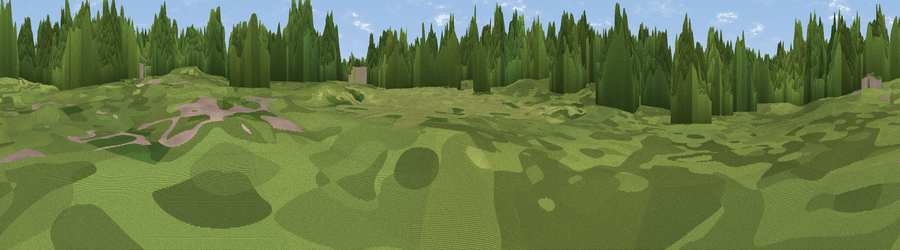

The Devisdale
#46177 in England · top 99% of its area beats it · near Altrincham · path 222 mWhere it is
The exact computed spot (SJ 75669 87489). Click the marker for map links.
Public access: the nearest public right of way is about 222 m away — the final stretch may cross private land. Computed from Natural England's CRoW access layer and OpenStreetMap rights of way — not the legal definitive map. Always verify locally.
The view, rendered

A 360° render of this exact spot computed from the terrain model, tree cover and land cover — summer colours, afternoon light, calibrated against photographs of famous viewpoints. Real trees, hedges and buildings will differ in detail.
The panorama
Grey silhouette: terrain skyline in each direction (720 bearings, Earth curvature and refraction included). Dashed green: skyline with trees (+15 m) and buildings (+8 m) as obstacles. Blue strip: how far the ground is visible on each bearing.
Where the view opens
Wedge length = distance to the farthest visible ground on that bearing (vegetation-aware). Rings at 10, 25 and 50 km.
What fills the view
84% woodland · 13% grassland · 2% built-up
Angular shares of the visible panorama (visual magnitude), not map area. Landscape diversity 0.22 (0–1 Shannon).
Key numbers
More beautiful places nearby
The staircase of upgrades: each row has a higher view potential than everything closer. Driving times are estimates from straight-line distance, calibrated against real road routing — check an actual route before setting out.
| Place | Direction | Drive | Score |
|---|---|---|---|
| Viewpoint near Dunham Town | WSW · 2 km | ~6 min | 9.9 |
| Carrington Moss | NNW · 4 km | ~10 min | 20.5 |
| Viewpoint near Cadishead | NW · 6 km | ~13 min | 22.4 |
| Viewpoint near Mere | S · 6 km | ~14 min | 30.6 |
| Butchersfield | W · 8 km | ~16 min | 38.9 |
| Viewpoint near Hollins Green | WNW · 9 km | ~17 min | 60.7 |
| Viewpoint near Culcheth | WNW · 11 km | ~21 min | 63.6 |
| Viewpoint near Alderley Edge | SE · 13 km | ~24 min | 68.8 |
53.38368, -2.36726 · source: osm peak · position refined by local search. Computed location — check access rights before visiting.